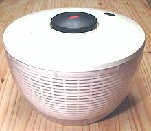
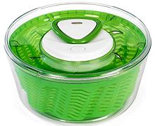

SAFARI
Users
There are many brands and sizes of salad spinner other than the two shown here, but these are the market leaders. I have no experience with any of the others.
Oxo Salad Spinner
 Far and away the market leader in salad spinners, the Oxo features a plunger action which can be operated with one hand. Both the bowl and basket can be used separately from each other and the lid. Mine, in the photo, is an older model, the current one (2022) has a transparent lid. There is also a "Small Salad and Herb" model - cute, but I see no need for it. You can dry one sprig of parsley in the big one if you feel the need.
Clearly this is the spinner to beat - and nobody's beating it. On Amazon
this spinner has 21,894 reviews with a 4-1/2 star rating (out of 5). I have used
mine for years and have never been less than fully satisfied with its
performance. Models have changed, but the basic action is exactly the same.
Zyliss Salad Spinner
 People who don't like the Oxo seem to love the Zyliss. This spinner features a pull cord action which takes both hands to operate. Zyliss has added one with a pump handle that works very differently from the Oxo pump. Photo © Source.